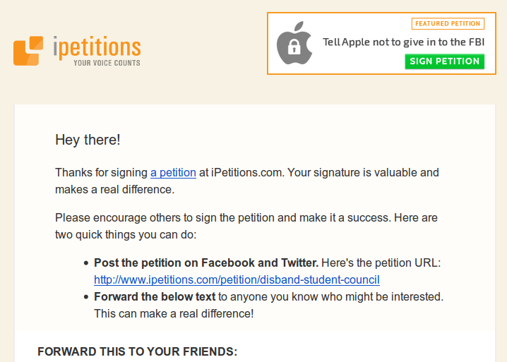
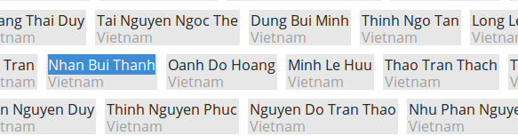

I did NOT sign that online petition!
This evening I received a rather strange email:

Um… I don’t remember signing any petition recently (or ever, for that matter)?
What happened?#
Apparently someone used my RMIT student email address to sign some petition for disbanding the university’s Student Council. Said petition was apparently started by some Ms. Trần Ngọc Tuệ Mẫn - Student Council’s vice president. Well… yay for free speech, I guess? Anyway, my name was really among the signers list:

How did this happen? Well, turns out iPetition does not require email confirmation upon signing, so anyone can effectively enter any email and name they want and the stupid website will happily accept that as an absolutely definitely most positively legit supporter of your cause. Cool huh?
Upon further inspection, almost all of the signer names are in one same format: the one that RMIT uses for its student names. So apparently a very motivated supporter of Ms. Mẫn’s… interesting campaign has been helpful enough to go through RMIT students’ IDs and names and sign us up, without us even having to know what it’s all about. Gee, thanks!
Why do I even care?#
I just don’t like people using my name without my consent. More importantly, I have my reasons to disagree with the sentiments expressed in her petition description. Also I thought this could be a somewhat useful public service announcement, or a mildly entertaining daily wtf story. I don’t know.
Hell, let’s throw in some of my own random thoughts to make this more like a blog post:
-
What’s with these petition websites? Have people actually achieved anything using these? Even if a petition website does send confirmation emails, what’s stopping me from using trash addresses? The signers’ email addresses are not displayed anyway so president@rmit.edu.vn won’t be too different from lol0042@spam.me now, will it? If you’re an official co-leader of something official who wants to do something official about it, maybe try a more, I don’t know, official channel?
-
The number of signers keep going up steadily, but slowly. Maybe our friendly neighborhood signerman is doing it all by hand instead of a script? If it’s the former… let’s say I do admire the dedication
and abhor the absolute stupidity. -
Is it normal for a student council to be this full of drama?
That concludes my mostly pointless blog post. Hopefully I’ll come up with something actually worth sharing soon. Until then, have an awesome weekend!